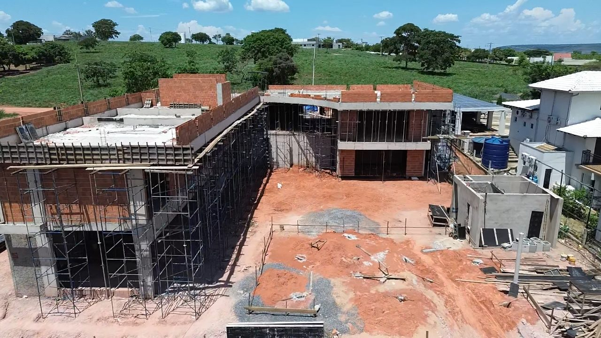
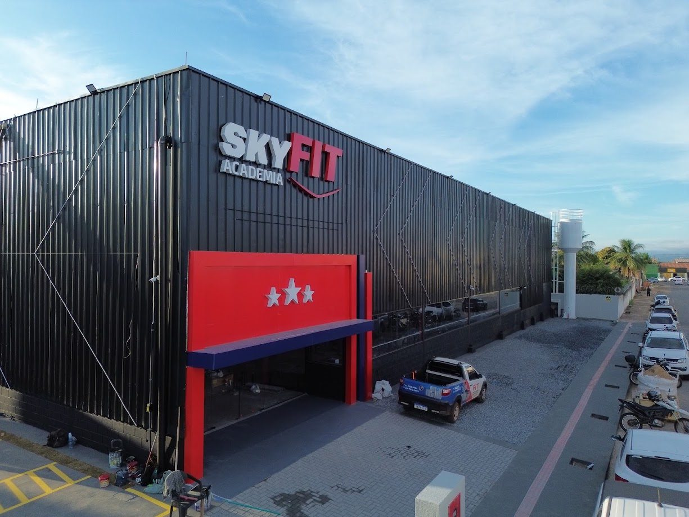
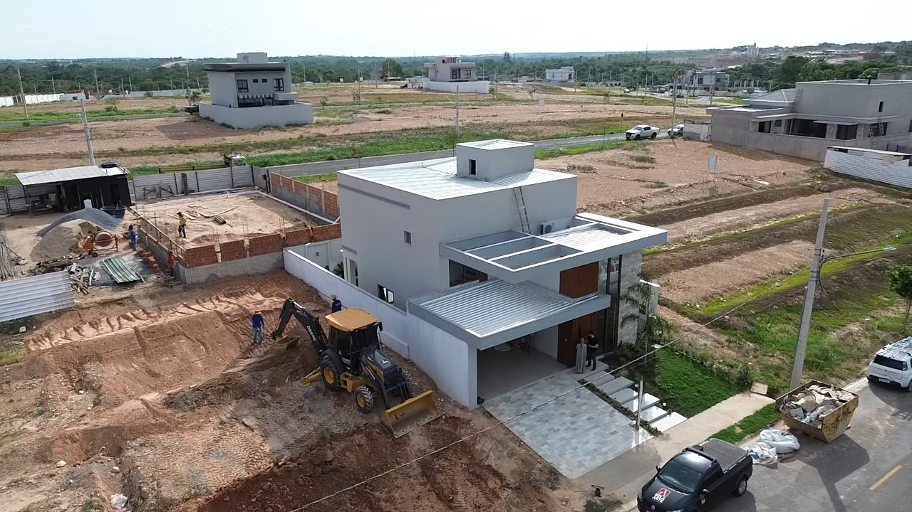
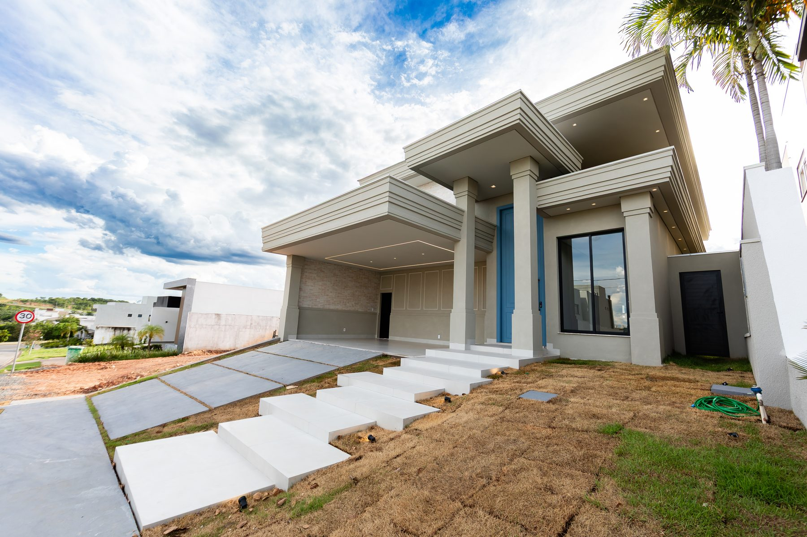

Construção residencial
Fornecimento de mão de obra e execução de construções residenciais, com equipe própria orientada por projeto e acompanhamento técnico.
Engenharia · Gestão · Construção
Mão de obra para construções residenciais e comerciais, projetos de engenharia e acompanhamento técnico. Cada etapa planejada, executada e acompanhada — com gestão e relatórios periódicos.
Posicionamento
Engenharia não termina no desenho. A AGL acompanha a obra de perto — do planejamento à entrega — para que o que foi projetado chegue ao lugar certo, no padrão técnico e no prazo combinado.
01 — Serviços
Da construção residencial e comercial aos projetos de engenharia e acompanhamento técnico, a AGL atua em cada etapa para manter a obra sob controle.
Fornecimento de mão de obra e execução de construções residenciais, com equipe própria orientada por projeto e acompanhamento técnico.
Mão de obra para empreendimentos e construções comerciais, com foco em prazo, organização de frentes de serviço e padrão de entrega.
Desenvolvimento de projetos de engenharia, com definição técnica, compatibilização e detalhamento necessários para construir sem improviso.
Acompanhamento da execução e da evolução da obra, com verificação de etapas, registro das atividades e comunicação periódica ao cliente.
Não sabe por onde começar? A primeira conversa serve para entender o escopo e indicar o caminho técnico.
Agendar uma conversa02 — Gestão de obras
A AGL trabalha com o sistema Mais Controle no gerenciamento das obras. Planejamento, execução, custos, prazos e acompanhamento ficam organizados e registrados — permitindo uma gestão mais precisa e informações claras ao longo da obra.
O cliente não precisa estar na obra
para saber o que está acontecendo.
Planejamento → Execução → Acompanhamento → Relatório → Controle → Entrega
Relatórios periódicos e registros da evolução da obra, organizados para o cliente.
Registros atualizados a cada relatório periódico
03 — Relatórios e transparência
Relatórios periódicos, objetivos e organizados para mostrar o que foi executado, o que está em andamento e quais são os próximos passos.
Relatórios entregues ao longo da obra, mantendo o cliente informado sobre sua evolução.
Informações diretas sobre o que foi executado, o que está em andamento e o que vem pela frente.
Evolução documentada da obra, com informações organizadas para consulta.
Fotos, registros e informações que mostram a evolução real da obra.
Registros fotográficos representados graficamente
“Transparência não é relatório bonito. É o cliente conseguir entender onde a obra está.”
MÉTODO AGL04 — Processo
Escopo, terreno, necessidade e orçamento. O que o cliente precisa, em termos técnicos.
Organização das etapas, recursos e frentes de serviço antes de iniciar.
Equipe em campo com orientação técnica e acompanhamento da obra.
Acompanhamento da evolução, verificação de etapas e gestão no Mais Controle.
Comunicação periódica do andamento e das atividades executadas.
Conclusão com verificação de qualidade, padrão técnico e escopo atendido.
05 — Obras
Registros reais de obras executadas pela AGL: execução, fachadas de obras entregues e projetos.




Modelo 3D: JVS Engenharia · Sketchfab
Registros publicados conforme a evolução das obras
06 — Referências
Depoimentos e referências de clientes serão publicados aqui, com autorização de uso.
Espaço reservado para depoimento de cliente.
Espaço reservado para depoimento de cliente.
Espaço reservado para depoimento de cliente.
07 — A AGL
A AGL Engenharia atua em Cuiabá e no interior de Mato Grosso com construção residencial e comercial, projetos de engenharia e acompanhamento técnico de obras.
O trabalho começa entendendo o que precisa ser feito. Depois vem o planejamento, a execução com equipe em campo e o acompanhamento técnico — com registro e comunicação ao longo do caminho. É assim que a AGL trabalha: planejamento, execução e acompanhamento em cada etapa da obra.
A gestão pelo sistema Mais Controle e os relatórios periódicos existem por um motivo prático: manter o cliente informado e a obra sob controle, do início à entrega.
08 — Contato
Conte o que você precisa construir ou projetar. A AGL retorna com o caminho técnico e o próximo passo.